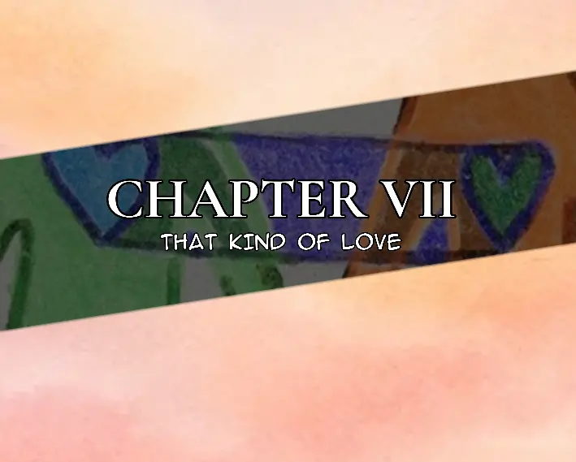

At the Pembroke Mansion
The Doyleys had finally reached their next stop in their search for the stolen gold coins. This was where they would find the boy who had started the gold coin robbery: Thomas Pembroke, son of Theo Pembroke.
Four armed guards stood at the mansion's gate. One was smoking, while another occupied himself with a knife, turning it idly between his fingers.
"We're here to see Theo. Tell him the Doyley brothers are here," Cobb said.
The guard playing with the knife took out his phone and made a call. After a brief conversation with Theo, he received instructions to let the Doyleys in.
Two of the guards escorted the brothers into the grounds, but instead of taking them into the mansion, they led them around to the backyard.
Theo had a small farmyard there, complete with a cabin. He sat beneath its shaded porch in a rocking chair, leisurely tossing chicken feed to the birds gathered around him.
When the brothers approached, Theo raised one hand in a small gesture, dismissing the guards. They promptly left the visitors alone with him.
"Morning, boys. The gold rush is still a thing in this modern age, I see," Theo remarked.
"We—" Cobb began.
"I like chickens," Theo interrupted, continuing to scatter feed across the ground.
He watched the birds peck at the food, apparently far more interested in their breakfast than in the men standing before him.
"I don't need to know what you want to say. Today is my peace day."
With that, Theo rose from his rocking chair and called out for Thomas.
From somewhere nearby, his son yelled back, his voice carrying across the farmyard.
"Yes, Dad. I'm coming," Thomas called from somewhere behind the cabin.
A few moments later, he appeared, wiping his hands against his trousers as he approached.
"Let's get in, son," Theo said, turning towards the cabin.
Thomas entered first, followed by his father and the Doyleys. The cabin had only two rooms, and the one they entered contained little more than a wooden table and four chairs. They were the sort of furniture that looked as though they had survived several generations of arguments, bad weather, and questionable carpentry. The table was scarred with scratches, its surface faded by years of use, while the chairs creaked under their own weight. Sitting on one required a certain degree of faith in the man who had built it.
Theo gestured towards the chairs.
The Doyleys took their seats, and Theo remained standing for a moment, studying the men across the table. He seemed perfectly comfortable in his surroundings, as though he had invited them over for lunch rather than summoned them to discuss a robbery involving his own son.
"Do you have a weapon you like?" Theo asked, looking at Carl.
"I only have a gun," Carl replied.
Theo tilted his head.
"Which one do you want to use? Knife, machete, chainsaw, dagger, sword…" He paused, considering the matter with exaggerated seriousness. "Butter knife?"
Carl raised his chin, amusement spreading across his face. He looked almost delighted by the question.
"Sword, please."
He smiled with the sort of satisfaction one might expect from Judas after convincing everyone he had come to dinner out of friendship.
Theo gave a small nod, as though Carl had made an entirely reasonable choice.
Without another word, he walked towards the adjoining room. The cabin was quiet enough that the creaking of the floorboards followed his movements. A moment later, the faint scrape of something being moved came from behind the doorway.
Cobb sat with his forearms resting on the table. His eyes followed Theo's movements, but his expression remained difficult to read. Beside him, Carl shifted in his chair, unable to hide his anticipation. He looked like a man who had been promised entertainment and was growing impatient with the intermission.
Thomas, meanwhile, stood near the wall.
He had barely spoken since entering the cabin. His gaze moved between his father, the Doyleys, and the doorway through which Theo had disappeared. Whatever he had expected from this meeting, the atmosphere was beginning to make him reconsider it.
The cabin had grown noticeably smaller.
Outside, chickens clucked and scratched at the ground, carrying on with the business of being chickens. Their ordinary noises drifted through the open doorway, creating an almost insulting contrast with the silence inside.
Theo returned a few minutes later, carrying a sword.
He approached the table without hurrying. The blade caught a narrow strip of daylight filtering through the cabin window, and he held it at his side as casually as another man might carry an umbrella. He stopped at the head of the table, drew his cigar from his mouth, and exhaled a slow stream of smoke.
Then he looked at Cobb.
"What's the cost?"
Cobb didn't immediately answer. He glanced at Thomas, then at Theo, allowing the question to settle over the table.
"His right hand."
Theo took another drag from his cigar.
"He didn't know what he was doing," he said calmly. "I'll give him further punishment, provide you with the information on the others involved, and help with whatever assistance you need. I'll also add a hundred gold coins as an apology for his actions."
He paused, looking at Cobb as if they were negotiating the price of livestock.
"His left hand."
For a moment, nobody spoke.
Cobb leaned back in his chair. His eyes remained on Theo, measuring the offer and the man making it. The Doyleys hadn't come to the Pembroke Mansion to listen to excuses, and Theo clearly understood that. He had not tried to deny his son's involvement, nor had he attempted to hide behind his position or his wealth. Instead, he had placed a price on the damage and offered something more valuable than an apology: cooperation.
Cobb's mouth curved into a faint smile.
"I like that."
Theo handed the sword to Carl.
Carl accepted it with obvious pleasure, adjusting his grip around the handle. He tested its weight with a small movement of his wrist, his expression suggesting that the meeting had finally reached the interesting part.
Theo turned towards his son.
"Put your left hand on the table."
Thomas stared at him.
For a second, he appeared not to understand the words. His eyes dropped to the sword in Carl's hands before returning to his father's face, searching for some indication that this was a joke, a test, or an elaborate performance intended to frighten him into confessing something else.
Theo offered none.
"Dad…"
"Your left hand, Thomas."
His voice hadn't risen. That was what made it worse.
Theo didn't need to shout to make himself understood. He stood beside the table with his cigar between two fingers, watching his son with the cold patience of a man waiting for someone to complete a task he'd already decided would be done.
"You'll lose three fingers," he continued. "And if you hesitate, you'll lose the whole hand."
Thomas looked towards the Doyleys.

Cobb sat motionless, his expression almost pleasant. Carl held the sword ready, the earlier amusement still lingering in his eyes. Neither man appeared particularly interested in Thomas's opinion on the arrangement.
Thomas swallowed.
He had nowhere to turn. The cabin door stood open, but the guards outside belonged to his father. The men around the table had come for payment, and his father had already decided what form that payment would take.
Slowly, Thomas stepped towards the table.
His fingers trembled as he placed his left hand on the worn wooden surface. He tried to keep it still, pressing his palm against the table as though a firm grip on the wood might somehow make the moment less real.
Carl moved into position.
For the first time since entering the cabin, Thomas looked genuinely terrified. His breathing became shallow, and he stared at the blade with the fixed attention of someone watching a disaster approach while knowing there was no time left to escape it.
"Dad, please—"
The sword came down.
Thomas's scream tore through the cabin.
He jerked backwards, clutching his injured hand against his chest before collapsing onto the floor. His chair toppled behind him, striking the wall with a hollow crack. He rolled onto his side, groaning and struggling to contain the pain, while the sound of his own frantic breathing filled the little room.
Carl stepped away from the table.
Cobb rose from his chair, smoothing the front of his jacket. Theo took another drag from his cigar, watching his son writhe on the floor without moving to help him.
For a brief moment, their eyes met.
Thomas looked up at his father, his face twisted with pain and disbelief. Whatever he had expected when Theo called him into the cabin, it had not been this. Perhaps he had believed that being Theo Pembroke's son would protect him from the consequences of his actions.
He had learned otherwise.
Theo looked away first.
"Come on, boys," he said, turning towards the door.
The Doyleys followed him outside, leaving Thomas on the cabin floor. The door swung slightly behind them, allowing the sounds of the farmyard to drift back into the room.
A chicken clucked somewhere near the porch.
The world, apparently, had no intention of stopping for Thomas Pembroke.
Outside, Theo led the brothers away from the cabin so they could discuss the remaining details of their arrangement, including the delivery of the gold coins.
Behind them, Thomas continued to groan on the floor, learning the sort of lesson that fathers like Theo preferred to teach only once.
Arabella woke up in the same bed Raymond had arranged for her the last time, in the same hotel room where their paths had crossed under rather unusual circumstances. The curtains were half drawn, allowing the pale morning light to slip into the room, and the sheets carried the faint scent of freshly laundered linen. Somewhere beyond the window, the city had already begun its daily business, its distant traffic occasionally breaking through the otherwise peaceful morning.
For a while, she remained beneath the covers, staring at the ceiling.
Something was missing.
She turned her head towards the bedside table.
No letter.
Arabella frowned and shifted onto her side, looking at the space beside the bed as though the missing object might have fallen there during the night. Nothing. She checked the table again, then glanced towards the door.
Still nothing.
Raymond had left her a letter the last time. Why hadn't he left one today?
Was he angry with her? Had the date gone badly? Perhaps he hadn't enjoyed her company as much as she had enjoyed his. Maybe something had happened after she had gone to sleep, something she couldn't remember.
Her thoughts began assembling possibilities, one after another, each more elaborate than the last. None of them had enough evidence to be convincing, but that had never stopped Arabella from entertaining an idea once it had captured her attention.
Raymond had been becoming someone special to her. She had felt it during their time together, in the little moments that had seemed to mean more than they ought to. She wanted to believe that the feeling was mutual.
Of course, Arabella had a particular talent for believing that things were going according to plan whenever they began to resemble the future she wanted.
She closed her eyes and tried to remember the previous evening.
There were fragments. The date, the conversation, the wine. Beyond that, her recollection grew rather unhelpfully vague. Perhaps she had drunk more than she remembered. Perhaps she had simply been tired. Whatever the explanation, she couldn't reconstruct the end of the evening with enough certainty to settle the questions troubling her.
She pulled the blanket closer and rolled onto her back again.
He could at least have left a letter.
The thought returned with such insistence that she almost laughed at herself.
It wasn't as though Raymond owed her a written account of his feelings every time they spent an evening together. And yet, the absence of that small gesture had managed to occupy her mind more effectively than the entire date itself.
She was still contemplating the matter when someone knocked.
"Come in," she called, sitting up slightly.
The door opened, and a hotel waitress entered, pushing a service trolley into the room. She wore the hotel's uniform, her hair neatly arranged, and carried herself with the quiet efficiency of someone accustomed to delivering breakfast to guests who were not always at their most sociable in the morning.
"Good morning, ma'am," she said pleasantly. "I hope you slept well."
"Good morning."
The waitress guided the trolley towards the small table near the window. Breakfast had been arranged on it, along with a pot of tea, a cup and saucer, and a small covered dish. The smell of warm food gradually made itself known, although Arabella's attention remained fixed on the bedside table.
The waitress noticed her looking.
"Are you expecting something?"
Arabella turned towards her. "Actually, yes."
"Something from the hotel?"
"No." Arabella paused, then gave a small, almost embarrassed smile. "Well, not exactly."
The waitress glanced around the room, taking in the unmade bed and the scattered remnants of the previous evening. "Should I ask, or would that be getting involved in something that isn't my business?"
That earned a quiet laugh from Arabella.
"It's a letter."
"A letter?" The waitress raised her eyebrows. "Now that sounds much more interesting than anything we usually deliver with breakfast."
Arabella shook her head, smiling despite herself. "I don't know why I'm even talking about it."
"Because you're waiting for one?"
"Apparently."
The waitress finished arranging the breakfast things and straightened the napkin beside the plate. "Well, I hope it arrives. There's nothing quite like waiting for something and having no idea when it's going to show up."
"You have no idea."
"I might have a little idea," the woman replied with a knowing smile. "Though I suppose it depends on who's supposed to be sending it."
Arabella looked down at her hands.
"Raymond."
The name came out more softly than she had intended.
The waitress gave her a moment before asking, "Someone special?"
Arabella's smile returned, this time without the embarrassment.
"Yes," she said. "I think he is."
"You think?"
"I'm still figuring that part out."
"Fair enough. Some people are rather difficult to figure out."
"You have no idea how difficult."
The waitress chuckled as she reached for the teapot. "And yet here you are, waiting for a letter."
Arabella opened her mouth to protest, then stopped. There was no point denying something the evidence had already established.
"Fine. I suppose I am."
The waitress poured the tea into the cup, then reached for a small container of syrup. She added a little to the tea while Arabella was distracted by the bedside table again, still half expecting another knock at the door and a second delivery.
"Is he always this mysterious?" the waitress asked.
"Not always." Arabella considered the question. "Sometimes I think he's just quiet. Other times, I wonder whether he deliberately keeps things to himself."
"Perhaps he likes having something left to say."
"Perhaps." Arabella's expression softened. "That's one of the things I like about him, actually. He doesn't feel the need to fill every silence. Most people do."
The waitress stirred the tea, listening.
"And how was your date?" she asked. "Apart from the part where you've been left to investigate the disappearance of a letter."
Arabella laughed again, this time more freely.
"It was nice. Really nice." She glanced towards the window, replaying what she could remember. "I enjoyed being with him. I just wish I could remember more of the evening."
"Too much wine?"
"Possibly."
"Well, at least the morning has arrived. You can always ask him about the parts you don't remember."
Arabella looked at her with sudden interest. "I could, couldn't I?"
"Of course. Unless you're planning to spend the entire morning interrogating your pillow."
"Oh, don't tempt me. I've already been doing that."
The waitress smiled and set the teacup down beside the breakfast plate.
"There you are, ma'am. Breakfast is served."
Arabella thanked her, then reached for the folded letter lying beside the tray.
The waitress had almost turned towards the door when Arabella unfolded it.
For a moment, the room became very quiet.
Her eyes moved across the page, taking in the familiar handwriting. Whatever uncertainty had been troubling her seemed to loosen its grip, and a smile gradually spread across her face. She read the letter again, slower this time, as though the words might somehow become more meaningful if she gave them another chance.
The waitress glanced back.
"Ah," she said. "I take it that's the letter?"
Arabella looked up, unable to conceal her happiness.
"Yes."
"And here I was thinking the hotel had forgotten something."
"No, he left it for me." She looked down at the page again, her smile growing almost boyish. "He said he enjoyed the date."
The waitress's expression warmed with amusement.
"And you were worried he hadn't?"
Arabella pressed her lips together, attempting to recover a little dignity.
"I had reasons."
"I'm sure you did."
"I just thought…" She stopped and shook her head. "Never mind. It's silly."
"Most things seem silly once we find out they turned out all right."
Arabella laughed softly. "That's annoyingly reasonable."
"I've been told."
For a few seconds, the two women shared a smile. There was something comforting about the ordinary conversation, about being able to admit a small insecurity without having it turned into a grand declaration of love or a reason to be ashamed.
Arabella folded the letter carefully and placed it beside her cup.
"I do love him," she said, almost as though she had only just realised how readily the words came to her. "He's become someone special to me."
The waitress watched her for a moment.
"Then I hope he knows that."
Arabella's expression grew thoughtful.
"I'm not sure he does."
"Well, perhaps one day you'll tell him."
"Perhaps."
The waitress adjusted the trolley's handle and stepped towards the door.
"Enjoy your breakfast, ma'am. And try not to spend the whole morning worrying about the next letter."
"I'll try."
"Good. You have tea to drink and a perfectly good breakfast waiting for you. That seems like a reasonable place to start."
Arabella smiled. "Thank you."
"It's my pleasure."
The waitress left the room, pulling the door shut gently behind her.
Once outside, her pleasant expression faded into something more measured. She paused beside the trolley, her gaze resting on the closed door for a moment before she continued down the corridor.
Lucille had learned a long time ago that people often revealed far more about themselves during ordinary conversations than they ever would under direct questioning.
And Arabella, it seemed, had just given her something worth thinking about.
Inside the room, Arabella had already returned to the letter. She smoothed a crease in the paper with her fingertips, then read the lines once more, smiling to herself.
For the first time that morning, she stopped wondering whether Raymond had enjoyed their date.
She was too busy wondering when she would see him again.
Raymond had barely arrived home when he stepped out of his car and looked around.
Something was missing.
The guards who usually stood at the entrance were nowhere to be seen. He glanced towards the front door, then across the yard, wondering whether they had collectively decided that guarding the Kazersdale residence was an optional occupation.
His gaze eventually landed on a tree a short distance away.
Alex was sitting beneath it, cross-legged, her back straight and her hands resting on her knees. Her eyes were closed, and her face wore an expression of unusual serenity. The gentle breeze stirred the leaves above her, casting shifting patterns of sunlight across the grass.
Raymond stood there for a moment, watching her.
"Well, I'll be damned," he murmured, genuinely impressed.
He had seen Alex angry, irritated, argumentative, and generally capable of making a peaceful room feel like the opening scene of a disaster movie. Seeing her sitting quietly beneath a tree, apparently at peace with the universe, was a rather unexpected development.
He walked towards her.
"You're more adorable like this than when you're a walking fire hazard."
"Shut up. I'm meditating."
Raymond stopped in front of her, looking down at her closed eyes.
"You were supposed to reply with a wise quote."
Alex remained silent.
He waited.
Nothing.
"Something about inner peace, the universe, or how the mind is like a river. You know, the sort of thing people say when they want everyone to believe they've figured out life."
"Guards," Alex said without opening her eyes. "Go back to the door."
Raymond turned his head.
Two guards who had been standing some distance away immediately began making their way back towards the entrance. Apparently, they had been nearby the entire time, merely far enough away to allow Alex the privacy she wanted.
Raymond watched them leave before looking at his sister again.
She opened her eyes.
"What do you want?"
"Good morning to you too."
"Raymond."
"I have good news about Hugo dying this Sunday."
Alex's expression changed.
The tranquillity disappeared, replaced by the familiar sharpness in her eyes. She adjusted her posture slightly, now paying considerably more attention to her brother.
"Oh, do tell."
Raymond lowered himself onto the grass opposite her. He crossed his legs, straightened his back, and placed his hands on his knees, imitating her posture with such deliberate precision that it was difficult to tell whether he was joining her meditation session or making fun of it.
Alex watched him settle into position.
"Are you seriously going to sit like that?"
"I'm trying to create a peaceful environment for this conversation."
"Talk."
Raymond smiled faintly.
"Turns out Hugo's estate will have fewer guards on Sunday. Apparently, Arabella is organising a party in the woods for the day, which means some of the security will be occupied elsewhere."
Alex nodded slowly.
"Meaning it's the best time to take care of Hugo," she said.
"Exactly."
For a moment, neither of them spoke. The wind moved through the tree above them, rustling the leaves while a bird called from somewhere beyond the garden wall.
Alex seemed to be considering the information.
"So, what's the plan?"
"I'll go alone. I only need a driver."
"Who?"
"That Fairchild girl. Clover."
Alex nodded again.
Raymond watched her.
She was still sitting cross-legged, her hands resting on her knees, her face composed. If he hadn't known her better, he might have mistaken her for someone listening to a lecture on the importance of mindfulness rather than discussing the death of a man.
He continued explaining his reasoning, outlining what he had learned about the situation and why Sunday presented an opportunity worth considering. Alex listened without interrupting, occasionally nodding as he spoke.
When he finished, Raymond tilted his head.
"Are you even listening?"
Alex opened her eyes wider.
"I am."
"You've been nodding for the last thirty seconds."
"Because it's a very good plan."
Raymond stared at her.
"That's your assessment?"
"Yes."
"Nothing else? No questions? No concerns? No profound observation about the fragile nature of human existence?"
Alex gave him an unimpressed look.
"Would you prefer I throw a rock at you to prove I'm awake?"
"No. Although that would be considerably more convincing than the nodding."
She ignored him.
"What time are you planning to do it?"
"In the afternoon."
Alex frowned slightly.
"Why the afternoon?"
"Because it's better during the day. People expect trouble at night. Darkness, suspicious noises, mysterious figures lurking around the property—it's all rather predictable." Raymond shrugged. "During the day, people tend to feel safer. They have other things occupying their attention."
Alex considered that for a moment.
"Oh."
She looked down at the grass between them, turning the idea over in her mind.
"You're right," she admitted. "That's a smart move."
Raymond inclined his head, accepting the compliment with the quiet satisfaction of a man who had expected nothing less from himself.
"Thank you."
"Don't look so pleased with yourself."
"I'm not. This is simply my face."
"Your face is irritating."
"And yet you've spent the last several minutes looking at it."
Alex rolled her eyes and placed her hands against the ground, preparing to stand.
"Where are you going?" Raymond asked.
"I need to pee."
He blinked.
For a moment, the carefully cultivated atmosphere of peaceful contemplation collapsed entirely.
"That's a rather abrupt end to a philosophical discussion."
"You asked."
"I was expecting something more mysterious. Perhaps you were going to commune with nature."
"I am communing with nature. Just not in the way you imagined."
Alex rose to her feet, brushed a few blades of grass from her clothes, and started towards the house.
Raymond watched her go.
"Try not to lose your inner peace on the way!"
"Try not to lose your brain while sitting there!"
Her voice drifted back from the garden path.
Raymond smiled to himself and settled more comfortably beneath the tree, keeping his legs crossed and his hands on his knees.
The shade was pleasant, the grass cool beneath him, and for once, nobody was demanding anything from him.
He closed his eyes.
He had a little time before he needed to think about Sunday again.
For now, he would enjoy the quiet.
Fifteen minutes later, Alex was in her room with Max.
The room was quiet, save for the occasional rustle of paper as Max reviewed a few documents he had brought with him. Alex sat comfortably in her chair, looking unusually pleased with herself. Whatever serenity she had achieved beneath the tree had apparently survived the journey to her bedroom, though it had taken on a considerably more dangerous purpose.
"We're going to kill Hugo on Sunday morning," she announced. "Before Raymond gets there. We're supposed to do the job cleanly, in and out."
She smiled with the pride of someone who had just solved a particularly difficult puzzle.
Max looked up from the documents.
"Why do we have to do it if Raymond is going to kill him anyway?"
"Because Mom doesn't want him involved in crime." Alex waved a hand dismissively. "Blah, blah, don't want him to turn out like Dad, blah, blah. You know how these things go."
Max regarded her for a moment.
"I understand, ma'am. But wouldn't us killing Hugo cause problems for Raymond if he arrives after we've already left?"
Alex's smile slowly faded.
She leaned back in her chair.
Max waited.
Alex stared at a point somewhere above his shoulder, working through the implications. She had been so pleased with the simplicity of the arrangement that she had overlooked the rather inconvenient possibility of two separate attempts converging on the same target.
"Oh, that is indeed a problem."
"It is, ma'am."
She tapped one finger against the armrest.
For a few seconds, the room fell silent. Then Alex's expression brightened again, as though a new thought had just wandered into her head and found a comfortable place to sit.
"Then we'll have one of the housekeepers put sleeping pills in Raymond's food. He won't be going anywhere, and we won't have to worry about him arriving in the middle of everything."
Max lowered the documents onto his lap.
"That settles it."
"Good."
"I'll prepare the remaining plans, arrange the necessary equipment, and select the people who will carry out the job."
"Yes, do that."
Alex settled deeper into her chair, evidently satisfied that the matter had been resolved. Max gathered his documents and began organising them into a neat pile, already returning to the practical business of preparing for Sunday.
Alex watched him for a moment.
"Max?"
"Yes, ma'am?"
"Bring me some honey."
He paused.
"Honey?"
"Yes, honey." She gave him a mildly offended look. "I haven't had any in a while."
Max stared at her, apparently reconsidering whether the conversation had taken place in the same room as the one they had started in.
"Of course, ma'am."
"And don't forget it this time."
"I won't."
"Good."
Max rose and headed towards the door.
Behind him, Alex leaned back, looking perfectly content with the morning's accomplishments. She had discussed a murder, identified a complication, found a way around it, and remembered that she was running low on honey.
All in all, she considered it a productive day.

Arabella left the hotel a little before noon, carrying her handbag over one shoulder and Raymond's letter safely tucked inside it.
The morning had turned out considerably better than she had expected. The anxiety that had accompanied her waking had gradually given way to something lighter, something that made her catch herself smiling at absolutely nothing. She had read the letter more times than she cared to admit, and although she would never have confessed it aloud, she had even considered keeping it beneath her pillow.
There were, after all, worse things a woman could do with her morning.
The hotel entrance opened onto a paved driveway, where several vehicles stood beneath the afternoon sun. A few guests were checking out, while a porter struggled with an oversized suitcase that appeared to contain either a man's entire wardrobe or a small family.
Arabella barely noticed any of them.
Her attention was on her driver's car, parked a short distance from the entrance. She adjusted her handbag and began walking towards it, her heels clicking against the pavement.
She was halfway there when the first gunshot rang out.
The sound cracked through the air, startling the people near the entrance. A man dropped the newspaper he had been reading. Someone screamed. The porter abandoned his battle with the suitcase, which promptly tipped over and spilled clothes across the pavement.
Arabella barely had time to turn towards the sound before a second shot followed.
Pain struck her right waist.
She stumbled, one hand flying to her side as the force of the impact sent her off balance. For a fraction of a second, she looked down in disbelief, unable to understand why her body had suddenly decided to betray her in the middle of an otherwise pleasant morning.
Then she saw the blood.
It spread across the fabric at her waist, darkening it rapidly. A few drops struck the pale pavement beneath her feet.
"Oh, God—"
Another scream rose from somewhere behind her.
Arabella forced herself forward, stumbling the remaining distance to the car. Her driver had already thrown open the door and was shouting her name, his expression transformed by the sight of the blood on her clothes.
"Get in! Get in!"
She practically fell into the back seat, clutching her side as he slammed the door shut.
"Drive!" she shouted.
The driver didn't need to be told twice.
The engine roared, and the car pulled away from the hotel entrance, its tyres scraping against the pavement as he steered onto the road. Arabella twisted in her seat, looking through the rear window while trying to keep pressure on her wound.
People were scattering across the driveway. A security guard was running towards the entrance, while another stood near the hotel doors, shouting instructions into his radio.
And then she saw her.
The woman stood near a parked car, watching the vehicle carrying Arabella disappear into traffic.
Lucille.
The hotel waitress.
For a moment, Arabella stared at her, struggling to reconcile the woman she had spoken to over breakfast with the figure now standing among the confusion of a shooting.
Lucille did not chase after the car. She did not panic or attempt to conceal herself behind the other guests. She simply watched until the vehicle turned onto the main road and vanished from sight.
Then she looked away.
Earlier that morning, she had stood beside Arabella's bed, pouring tea and making polite conversation while the young woman spoke about Raymond. She had listened to every word, watched the smile on Arabella's face, and quietly added something to her tea.
A simple precaution, she had thought.
The tea had gone cold before Arabella drank it.
Lucille had left the room with her plan still unfinished, her patience wearing thinner with every passing minute. She had hoped the poison would take care of the problem without attracting unnecessary attention. It would have been quiet, convenient, and difficult to connect to her.
But Arabella had ruined that arrangement by doing something as ordinary as leaving her tea untouched.
Now, standing beside her car, Lucille considered the outcome.
She had fired at Arabella with the intention of putting an end to the matter, or at the very least forcing the girl to reconsider whatever foolish attachment she had developed. A bullet to the waist, she had reasoned, would be enough to frighten her into understanding that the world was not obliged to accommodate her romantic ambitions.
She had not expected Arabella to reach the car so quickly.
Nor had she expected the driver to react quite so efficiently.
Lucille exhaled through her nose.
It was irritating when people refused to behave according to plan.
She opened the driver's door of her own car and slipped inside. The vehicle was new, its interior still carrying the faint smell of fresh leather. She had purchased it recently, and she had rather hoped that its first few outings would involve something more pleasant than a shooting outside a hotel.
Still, there was little point in dwelling on disappointments.
She turned the key, adjusted the rear-view mirror, and checked the road before pulling away from the parking space.
By the time the hotel staff began gathering outside to establish what had happened, Lucille was already driving through the city.
She kept both hands on the steering wheel, her expression composed.
The poison had failed.
The shooting had not gone as planned.
And Arabella Pembroke, against all reasonable expectations, was still alive.
Lucille glanced at the traffic ahead of her.
Well, she thought, there was always the question of what to do next.

The Doyleys arrived at DizzyDean's gym shortly after noon.
The place was alive with activity. Heavy weights struck the floor, punching bags swung beneath the ceiling, and the rhythmic thud of fists against leather echoed through the training area. Men moved between exercise stations, some drenched in sweat, others shouting encouragement at their partners. The air carried the familiar mixture of rubber mats, metal, and hard-earned perspiration.
Nobody paid much attention to the two men who walked through the entrance.
Perhaps they assumed the brothers had come to train. Perhaps they simply understood that staring at strangers was a poor use of energy in a place where people routinely attempted to knock each other's teeth loose.
Cobb and Carl passed the reception desk and continued towards the back of the building, where a staircase led to the administrative offices. Their footsteps sounded unusually distinct against the noise of the gym.
They had come for the World Fair gold.
The coins had been found in a Kazersdale van during a delivery to DizzyDean's premises. Instead of reporting the discovery or returning the money to its rightful owners, Dean had decided to keep it. He had apparently convinced himself that finding stolen property made him the owner of it.
It was a fascinating theory.
Unfortunately for Dean, the Doyleys had never been particularly interested in legal philosophy.
At the end of the corridor stood an office door bearing his name. Cobb knocked once.
"Come in," a voice called from inside.
The brothers entered.
DizzyDean sat behind a broad desk, his chair pushed back slightly. He was a thickset man with a powerful neck and heavy shoulders, the sort of physique that suggested he had spent a considerable portion of his life making other people regret their decisions. A framed photograph of him standing beside a boxing champion hung on the wall behind him. On another wall, several certificates and gym awards had been arranged with the sort of care usually reserved for family portraits.
Dean looked up from his paperwork.
He recognised them immediately.
His expression tightened, but he made no attempt to reach for a phone or summon the people working downstairs. Instead, he placed his pen on the desk and leaned back in his chair.
"Well," he said. "The Doyley brothers. I was wondering when you'd show up."
Cobb closed the door behind them.
"Then you knew we were coming."
"I'd have to be an idiot not to know."
Carl glanced around the office, taking in the certificates, the photographs, and the neatly arranged collection of trophies on a shelf.
"Quite a respectable establishment you've got here," he remarked. "Shame about the owner."
Dean ignored him.
"Listen, I know what this is about. The gold." He leaned forward, resting his forearms on the desk. "I can return the money. Better than that, I'll pay three times what I found in the van. Whatever the original amount was, you'll get three times its value."
Cobb looked at him without changing his expression.
"We're not here to negotiate."
Dean's jaw tightened.
"Everyone negotiates."
"Not everyone."
Carl pulled out a chair and sat down, making himself comfortable. He crossed one leg over the other and regarded Dean with an almost conversational smile.
"We're here to leave a testimony."
Dean stared at him.
"A testimony?"
"Something for the next fellow who finds himself tempted to keep what doesn't belong to him."
"I didn't steal the gold," Dean insisted.
Cobb stepped closer to the desk.
"No. You merely found it in a van, decided it was yours, and kept it to yourself."
"I was going to return it."
"When?"
Dean hesitated.
Cobb nodded as though the silence had answered his question.
"Exactly."
Dean's eyes moved between the brothers. He was accustomed to dealing with difficult men. Running a gym meant encountering people who believed their muscles could settle every disagreement, and Dean had spent years learning how to manage them. He knew when to raise his voice, when to offer a deal, and when to make someone believe they had come out ahead.
But the Doyleys were not customers he could intimidate into leaving.
"Look, the gold came into my possession by accident," he said. "I didn't arrange the delivery. I didn't rob anyone. I saw an opportunity, and I took it. That's all."
Carl tilted his head.
"You make it sound almost admirable."
"I'm being honest."
"No, you're explaining yourself. There's a difference."
Dean's gaze hardened.
"What exactly do you want from me? I've already offered to repay the money three times over."
"You kept it," Cobb replied. "That's the problem."
"And I can fix that."
"You could have fixed it before we arrived."
Dean leaned forward, his voice growing more urgent.
"Listen to me. I have money. I have connections. Whatever arrangement you need, I can make it happen. You walk out of here with more gold than you came looking for, and nobody needs to get hurt."
Carl's smile widened slightly.
"That's a generous offer."
For the first time, Dean seemed to believe he might have found a way out.
Then Carl added, "Unfortunately, you've mistaken us for businessmen."
Dean's expression fell.
Cobb glanced towards the office door, then back at Dean.
"We came here to do our job, DizzyDean."
The words were delivered without anger or theatrical menace. Cobb might have been informing a shopkeeper that he had come to collect an overdue parcel.
That, more than anything else, seemed to frighten Dean.
He pushed his chair back a little.
"Now, hold on—"
Carl drew his gun.
Dean's eyes dropped to the weapon, and the words died in his throat.
"Wait."
Carl fired.
The gunshot cracked through the office, sharp enough to silence the conversation and briefly overwhelm the noise coming from the gym below. Dean collapsed behind the desk, his chair scraping violently against the floor.
For a moment, neither brother spoke.
Carl lowered the gun and glanced towards the door, listening for any immediate reaction from outside. The gym's noise had faltered, but there was no sudden rush of footsteps up the stairs.
He returned his attention to Cobb.

"I've stopped teaching for today," he announced, as casually as a man cancelling an afternoon appointment. "It's been a productive day."
Cobb gave him a sideways look.
"You've been looking for an excuse to stop teaching all week."
"That's a serious accusation."
"It's an observation."
Carl rose from his chair and straightened his jacket.
"Come on. Let's go gambling."
Cobb remained where he was for another moment, looking at his brother with mild suspicion.
"Gambling?"
"Yes. Cards, dice, whatever takes your fancy. We could use a little entertainment that doesn't involve people making terrible financial decisions."
Cobb glanced at Dean's desk.
"That's rich, coming from you."
"I'm a man of many contradictions."
"You're a man of many problems."
Carl opened the office door and gestured towards the corridor.
"Are you coming or not?"
Cobb sighed and followed him out.
"For once, you're taking a break, Doyley."
Carl looked back over his shoulder.
"Don't make it sound like a charitable act."
"It is. I'm sacrificing a perfectly good afternoon to indulge you."
"Just this once," Carl said.
"Just this once."
The brothers descended the stairs and walked back through the gym, passing men who had already resumed their exercises. A trainer shouted instructions beside the punching bags, and someone near the weights laughed at a joke that had apparently survived the gunshot.
Neither brother hurried.
By the time they reached the exit, Carl was already discussing which gambling establishment they ought to visit.
Behind them, in the office above the gym floor, DizzyDean's offer of three times the gold's value remained unaccepted.
Some negotiations, it seemed, ended before the other party understood that the meeting had begun.
Raymond woke to the sound of footsteps approaching through the grass.
He had apparently fallen asleep beneath the tree, where the shade and the gentle breeze had proved considerably more persuasive than his intention to remain awake. One arm rested across his stomach, and his head leaned against the trunk. For a few seconds, he remained still, caught between sleep and consciousness, trying to remember whether he had actually meant to close his eyes.
Then a shadow fell across his face.
Someone was standing over him.
Raymond slowly opened his eyes.
Lucille looked down at him, her hands resting on her hips. There was something almost playful about her expression, the sort of smile an adult might wear when catching a child doing something he had been explicitly told not to do.
"Naughty boy," she said. "Go to your room."
Raymond blinked.
For a moment, he simply stared at her, his sleepy mind struggling to reconcile the familiar surroundings with the unfamiliar woman standing over him.
"Who—"
His eyes widened as recognition began to settle in.
Lucille smiled.
Raymond barely had time to react before she struck him.
The punch landed hard, snapping his head to the side and sending him sprawling against the grass. His shoulder struck the ground, and the breath left his lungs in a startled gasp.
He tried to lift his head, confusion flashing across his face as he attempted to understand what had just happened.
Lucille stepped closer.
Raymond's vision blurred. The tree above him seemed to tilt, its branches swaying against a patch of bright sky. He attempted to push himself up, but his arms failed to cooperate.
A second later, the garden disappeared into darkness.
Raymond lay motionless beneath the tree.
Lucille looked down at him for a moment, her expression settling into something far less playful.
"Well," she murmured, "that was easier than expected."
She glanced towards the house before turning her attention back to Raymond.
The morning's business, it seemed, was not yet finished.
An hour later, Raymond woke up in his bedroom. He lay still for a moment, trying to gather his thoughts before noticing Lucille lying beside him.
He turned his head towards her.
"What do you want?"
"I want Arabella out of your life, honey," Lucille replied.
"She already is. I got what I wanted."
"She annoys me. Just seeing her makes me want to kill her, and I wouldn't want to find myself smelling her on you."
Raymond stared at her briefly before settling back against his pillow.
"I'm going to take a little nap, but you can keep talking."
"You are not napping until I tell you to."
He turned towards her again, an amused smile creeping across his face.
"Wow. How bratty of you. This isn't love; this is lust."
"Who gives a shit?"
Lucille sat up on the bed, looking entirely unbothered by his assessment.
Raymond studied her for a moment.
"Are you flirting with me?"
"What do you think?"
Rather than answering, Raymond got out of bed and stood up, stretching lazily as though he had all the time in the world.
"This is a good time to take an invisibility pill."
Lucille stared at him.
"What in the fuck is this bullshit, Raymond?"
He glanced back at her, looking far too pleased with himself.
"You heard me."
"Raymond, you should kill Hugo so we can maybe go somewhere together."
There was the real issue. Beneath Lucille's flirting and possessiveness lay a desire to have Hugo dead and Raymond all to herself. She wanted them to go somewhere together, away from the people who stood between them. And she was growing impatient with Raymond's apparent ability to treat murder like an appointment he could casually reschedule.
Raymond, meanwhile, seemed perfectly content to make her regret bringing it up.
"Sunday. I promise," he said eventually, pouring himself a glass of wine. "But you'll have to be patient."
He glanced over his shoulder at Lucille, who was still sitting on his bed.
"If you're feeling down, I can feel you up."
Lucille blushed.
Raymond smiled into his glass, clearly pleased with himself.
"Did you do that to Arabella?" she asked.
"I didn't. I wouldn't," Raymond replied, his amusement fading slightly as he turned to face her.
Lucille got up from the bed and walked towards him. Without saying anything, she wrapped her arms around him, drawing herself close.
Raymond looked down at her.
"I kinda like you," she admitted. "Want to hang out and stuff until we hate each other?"
"I do," Raymond replied.
Lucille leaned in and kissed him. Before he could take another sip, she took the wineglass from his hand and drank from it herself.
Raymond watched her with a small smile.
"I like you too."
"Sure," Lucille said, giving him a suspicious look. "You like me for my butt."
She turned away and walked slowly towards the bed, making absolutely no effort to hide the fact that she wanted him to admire her figure.
Raymond obliged.
"Curvaceous," he remarked appreciatively.
Lucille glanced back at him, looking rather pleased with herself.
Raymond set the wineglass aside and walked over to her, stopping directly in front of her.
"We need to talk on this bed," he announced.
Lucille looked him up and down.
"Your clothes are making me uncomfortable. Please take them off before we talk."
Raymond grinned.
"I already knew you wanted to see me naked."
"I eat boys."
"Terrifying."
"You should be."
Whatever serious conversation they had supposedly intended to have was soon forgotten. They spent the rest of the afternoon tangled up together, exchanging kisses, teasing one another, and rolling around on the bed. Their affection came with the occasional playful bite, a sharp pinch, and enough mischief to make it clear that neither of them intended to be the more innocent party.
For two people who had only just admitted to liking each other, they seemed remarkably comfortable finding new ways to annoy one another.
And judging by the state of the bed, the abandoned wineglass, and their apparent lack of interest in going anywhere, they had found considerably more entertaining ways to spend the afternoon than talking.

.png)
.png)
.png)

.png)